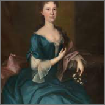
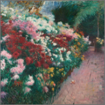
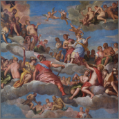
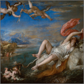
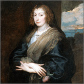
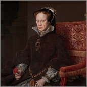
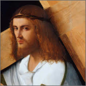

Blackburn, 1764
Object information is continually being reviewed, updated, and enriched in order to give greater access to the collection.
A Lady of The
Russell Family

Bunker had been experimenting with Impressionism, and under the influence of Claude Monet.
Miller Bunker, 1888
Chrysanthemums

American collectors idolized Veronese’s most famous works, his vast mythological scenes were hard to come by and large for most houses.
Titian, 1562
The Coronation
of Hebe

Titian’s Rape of Europa, painted in Venice in the 1560s, is inspired by a story from Ovid’s Metamorphoses.
Titian, 1562
The Rape of Europa

Fashion and art found remarkable rapport in van Dyck’s portraits of English women.
Van Dyck, 1639
Woman with a Rose

Although this portrait was painted as an engagement present for her future husband, Mary looks somber.
Antonis Mor, 1571
Mary 1 of England

Giovanni Bellini, 1510
When the Museum purchased this painting in 1940, it was considered an original work by the Venetian master Giovanni Bellini.
Christ carrying
the Cross

Filter